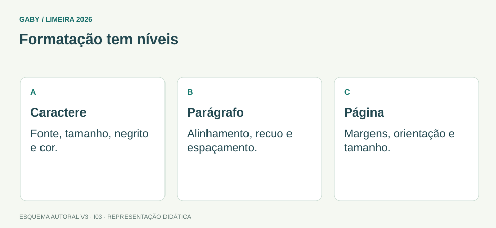

Objetivos do módulo
- Distinguir formatação de caractere e parágrafo.
- Usar alinhamento, espaçamento, recuo e estilos básicos.
- Entender cabeçalho, rodapé, localizar/substituir e edição.
- Selecionar texto com mouse e teclado e saber o que cada comando do grupo Fonte faz.
- Configurar a caixa Parágrafo: recuos especiais, espaçamento Antes/Depois, espaçamento entre linhas, tabulações e paginação.
- Usar o Pincel de Formatação, os estilos e as listas automáticas.
- Usar Localizar e Substituir com suas opções de pesquisa.
- Usar a guia Revisão: ortografia e gramática, idioma de revisão, contagem de palavras, controle de alterações e comentários.
- Diferenciar Salvar de Salvar uma Cópia.
Formatação tem níveis

Descrição em texto do esquema
- Caractere: Fonte, tamanho, negrito e cor.
- Parágrafo: Alinhamento, recuo e espaçamento.
- Página: Margens, orientação e tamanho.
Oficina visual · aplique o esquema
Para destacar um título em negrito e centralizá-lo, quais dois tipos de formatação são usados?
Atividade autoral complementar da V3. Registre sua resposta; a resolução está no arquivo de gabarito e revisão.
Mapa do conteúdo
1. Estrutura do documento
Referência desta aula: Word do Microsoft 365 para Windows (desktop), em português do Brasil. Os atalhos citados são os da interface em português; vários deles mudam na interface em inglês.
Um documento do Word é composto por texto, parágrafos, seções e objetos. Formatação de caractere afeta fonte, tamanho, negrito, itálico etc.; formatação de parágrafo afeta alinhamento, recuos, espaçamento e listas.
Três níveis de formatação
| Nível | O que alcança | Exemplos | Onde fica |
|---|---|---|---|
| Caractere (fonte) | Só o texto selecionado, ou o que será digitado a partir do cursor | Tipo de letra, tamanho, negrito, itálico, sublinhado, cor | Guia Página Inicial, grupo Fonte |
| Parágrafo | O parágrafo inteiro em que o cursor está, ou todos os parágrafos selecionados | Alinhamento, recuo, espaçamento, tabulações, paginação | Guia Página Inicial, grupo Parágrafo |
| Página (seção) | Todas as páginas da seção | Margens, orientação, tamanho do papel | Guia Layout |
Para o Word, parágrafo é tudo o que fica entre duas marcas de parágrafo (¶), que surgem a cada Enter. Um título de uma palavra é um parágrafo. A marca ¶ guarda a formatação do parágrafo; por isso ela importa ao copiar formatação (seção 8).
Guia Página Inicial
Quase tudo desta aula está na guia Página Inicial, nos grupos Área de Transferência (Pincel de Formatação), Fonte, Parágrafo, Estilos e Edição (Localizar, Substituir, Selecionar). Os grupos Fonte e Parágrafo têm, no canto inferior direito, uma pequena seta chamada iniciador de caixa de diálogo: ela abre a caixa Fonte ou a caixa Parágrafo, com todas as opções do grupo. Portanto, a caixa de diálogo Fonte é aberta pela guia Página Inicial, e não por Referências, Correspondências ou Revisão.
2. Alinhamentos
| Alinhamento | Efeito |
|---|---|
| Esquerda | borda esquerda regular |
| Centralizado | texto centralizado entre margens |
| Direita | borda direita regular |
| Justificado | ajusta espaços para alinhar ambas as margens |
O alinhamento é formatação de parágrafo: basta o cursor estar dentro do parágrafo, sem selecionar nada. Os botões ficam no grupo Parágrafo da guia Página Inicial. Atalhos no Word em português: Ctrl+J justifica, Ctrl+E centraliza e Ctrl+Q alinha à esquerda. O Ctrl+J é o mesmo na interface em inglês.
No justificado, o Word distribui o espaço entre as palavras para que as linhas encostem nas duas margens; a última linha do parágrafo fica à esquerda.
3. Parágrafo
Recuos controlam posição das linhas em relação às margens; espaçamento antes/depois controla distância entre parágrafos; espaçamento entre linhas controla distância vertical dentro do parágrafo. Enter cria novo parágrafo; Shift+Enter insere quebra de linha manual sem novo parágrafo.
Caixa Parágrafo
Abra pelo iniciador de caixa de diálogo do grupo Parágrafo (guia Página Inicial). Ela tem duas guias: Recuos e Espaçamento e Quebras de Linha e de Página. Na parte de baixo há a área Visualização, que mostra uma amostra do parágrafo com as opções escolhidas antes de você clicar em OK, e os botões Tabulação e Definir como Padrão.
Recuo não é margem
Margem é da página (guia Layout) e vale para todo o documento ou seção. Recuo é do parágrafo: é a distância entre a margem e o texto daquele parágrafo. Para afastar só um parágrafo, altere o recuo dele; mexer na margem deslocaria todo o texto.
| Campo da caixa Parágrafo | O que faz |
|---|---|
| Recuo: Esquerda | Afasta o parágrafo inteiro da margem esquerda. |
| Recuo: Direita | Afasta o limite direito do parágrafo da margem direita; as linhas ficam mais curtas desse lado. |
| Especial: Primeira linha | Recua somente a primeira linha, no valor do campo “Por”. É a entrada de parágrafo tradicional. |
| Especial: Deslocado | O inverso: a primeira linha fica no lugar e as demais linhas são recuadas. Comum em listas de referências bibliográficas. |
Exemplo: com Especial = Primeira linha e Por = 2 cm, só a linha inicial começa 2 cm depois; as outras continuam na margem. Trocando para Deslocado com os mesmos 2 cm, a primeira linha começa na margem e da segunda em diante o texto começa 2 cm depois.
Espaçamento Antes e Depois
Os campos Antes e Depois definem, em pontos, o espaço vertical acima e abaixo do parágrafo. Eles mudam a distância entre parágrafos sem alterar a distância entre as linhas de dentro. É a forma correta de separar parágrafos, no lugar de apertar Enter várias vezes.
A caixa Não adicionar espaço entre parágrafos do mesmo estilo faz o Word ignorar o Antes e o Depois entre parágrafos consecutivos que usam o mesmo estilo, como os itens de uma lista. Ela não mexe no espaçamento entre linhas nem nos recuos.
Espaçamento entre linhas
Controla a distância entre as linhas dentro do parágrafo.
| Opção | Significado | Exemplo |
|---|---|---|
| Simples | Espaçamento padrão, de uma linha. | Atalho Ctrl+1. |
| 1,5 linhas | Uma vez e meia o espaçamento simples. | Atalho Ctrl+5. |
| Duplo | Duas vezes o simples. | Atalho Ctrl+2. |
| Pelo menos | Altura mínima, em pontos. A linha pode crescer para acomodar uma fonte ou figura maior. | Pelo menos 14 pt: nenhuma linha terá menos de 14 pt; uma linha com símbolo grande fica mais alta. |
| Exatamente | Altura fixa, em pontos. Não cresce, mesmo que a linha tenha fonte maior. | Exatamente 18 pt: todas as linhas com 18 pt. |
| Múltiplo | Um fator aplicado ao espaçamento simples. | Múltiplo 1,15 = 15% a mais que o simples; Múltiplo 3 = triplo. |
Atenção às unidades: Pelo menos e Exatamente são medidos em pontos; Múltiplo é um número de vezes. Nenhum deles muda o tamanho da fonte.
Definir como Padrão
O botão Definir como Padrão grava as opções atuais da caixa como padrão. O Word pergunta o alcance: só este documento ou todos os documentos baseados no modelo Normal. Na segunda opção, a configuração passa a valer para os novos documentos criados a partir desse modelo. Ela não reescreve os arquivos que já estão salvos no computador.
Paginação do parágrafo
Na guia Quebras de Linha e de Página da caixa Parágrafo, o grupo Paginação decide como o parágrafo se comporta na virada de página.
| Opção | O que garante | Uso típico |
|---|---|---|
| Controle de linhas órfãs/viúvas | Evita que uma única linha do parágrafo fique sozinha no fim ou no início de uma página. Vem marcada por padrão. | Texto corrido. |
| Manter com o próximo | O parágrafo fica na mesma página que o parágrafo seguinte. | Aplicada ao título, para que ele não fique no pé da página separado do texto que apresenta. |
| Manter linhas juntas | Todas as linhas do parágrafo ficam na mesma página; ele não é dividido. | Um aviso curto que deve aparecer inteiro. |
| Quebrar página antes | O parágrafo sempre começa em uma nova página. | Título de capítulo. |
Para não confundir: Manter linhas juntas olha para dentro do parágrafo; Manter com o próximo liga dois parágrafos e é aplicada ao primeiro deles.
Quebras e espaço incondicional
| Atalho | O que insere |
|---|---|
| Enter | Novo parágrafo. |
| Shift+Enter | Quebra de linha: muda de linha sem criar parágrafo. |
| Ctrl+Enter | Quebra de página: o texto seguinte vai para a próxima página. |
| Ctrl+Shift+Enter | Quebra de coluna. |
| Ctrl+Shift+Barra de espaços | Espaço incondicional (não separável): as duas palavras ficam sempre na mesma linha. |
O espaço incondicional tem a aparência de um espaço comum, mas o Word não quebra a linha nele. Serve para manter juntos, por exemplo, “Dr.” e o sobrenome, ou “15” e “km”.
4. Edição e revisão
Localizar pesquisa texto; Substituir troca ocorrências de forma controlada. No Word em português, o atalho de Substituir é Ctrl+U (Ctrl+H é o da interface em inglês); os detalhes estão na seção 10. Desfazer (Ctrl+Z) e Refazer (Ctrl+Y) ajudam a corrigir alterações. O recurso “Mostrar tudo” (¶) exibe marcas não imprimíveis, útil para diagnosticar formatação.
O botão ¶ fica no grupo Parágrafo da guia Página Inicial. Com ele ligado, aparecem a marca de parágrafo, os espaços, as tabulações e as quebras. Essas marcas não saem na impressão.
Ctrl+Alt+Z percorre os locais das quatro últimas alterações feitas no documento. Ele só leva o cursor de volta a esses pontos: não desfaz nada. As ferramentas de revisão (ortografia, idioma, contagem de palavras, controle de alterações e comentários) estão na seção 11.
5. Cabeçalho e rodapé
Cabeçalho ocupa região superior e rodapé, inferior, podendo conter texto, campos, data e numeração. Podem variar por seção e por primeira página, conforme configuração.
6. Seleção de texto
Quase toda formatação de fonte exige selecionar antes. Sem seleção, o comando vale para o que for digitado a partir do cursor.
| Ação | O que seleciona |
|---|---|
| Um clique no texto | Nada: apenas posiciona o cursor. |
| Duplo clique sobre uma palavra | A palavra. |
| Três cliques dentro de um parágrafo | O parágrafo inteiro. |
| Clicar e arrastar | O trecho percorrido. |
| Um clique na área de seleção (faixa em branco à esquerda da linha, onde o ponteiro vira uma seta inclinada para a direita) | A linha inteira. |
| Duplo clique na área de seleção | O parágrafo ao lado. |
| Shift + setas | Estende a seleção pelo teclado. Com o cursor no início da linha, Shift+seta para baixo seleciona a linha. |
| Ctrl+T | Todo o documento (Selecionar Tudo, no Word em português). |
| Ctrl+Shift+F8 e depois as setas | Um bloco vertical (retangular) de texto. |
Digitar sobre a seleção
Com um trecho selecionado, o que você digitar substitui o trecho; não é preciso apertar Delete antes. Selecione “ofício”, digite “memorando” e a primeira palavra some, dando lugar à segunda. Se foi sem querer, Ctrl+Z desfaz.
7. Formatação de fonte
Os comandos abaixo ficam no grupo Fonte da guia Página Inicial. Eles mudam a aparência dos caracteres, nunca o texto escrito, e podem ser combinados: o mesmo trecho pode estar em negrito, itálico e sublinhado ao mesmo tempo.
| Comando | O que faz | Observação |
|---|---|---|
| Fonte | Escolhe o tipo de letra (a família, o desenho das letras): Calibri, Arial, Times New Roman. | Não muda o tamanho. |
| Tamanho da Fonte | Define o tamanho, medido em pontos (pt). | Um campo com 12 significa 12 pt. |
| Negrito | Traço mais grosso. | Ctrl+N no Word em português. |
| Itálico | Letras inclinadas. | Ctrl+I. |
| Sublinhado | Linha sob o texto. A seta ao lado do botão abre os estilos de linha (duplo, pontilhado, ondulado) e a cor do sublinhado. | Ctrl+S no Word em português; na interface em inglês é Ctrl+U. |
| Tachado | Linha horizontal no meio do texto, que continua legível. | Indica algo riscado, sem apagar. |
| Subscrito | Caracteres pequenos abaixo da linha de base. | O 2 de CO2. |
| Sobrescrito | Caracteres pequenos acima da linha de base. | O 3 de 5 cm3; o “o” de 1o. |
| Maiúsculas e Minúsculas | Troca a caixa do texto selecionado. | Shift+F3 alterna entre maiúsculas, minúsculas e iniciais maiúsculas. |
| Efeitos de Texto e Tipografia | Aplica efeitos visuais às letras: contorno, sombra, reflexo e brilho. | Não confundir com sombreamento, que é cor de fundo do parágrafo. |
| Cor do Realce do Texto | Pinta o fundo do trecho, como uma caneta marca-texto. A cor das letras não muda. | Formatação de caractere. |
| Cor da Fonte | Muda a cor das letras. | O fundo não muda. |
| Limpar Toda a Formatação | Remove a formatação do trecho selecionado e o devolve ao padrão. As palavras permanecem. | Botão com um “A” e uma borracha. |
Os atalhos mudam com o idioma
Na interface em português do Brasil, os atalhos seguem as palavras em português. Guarde os pares que mais confundem:
| Atalho no Word em português | Comando | Na interface em inglês |
|---|---|---|
| Ctrl+N | Negrito | Ctrl+B |
| Ctrl+S | Sublinhado | Ctrl+U |
| Ctrl+B | Salvar | Ctrl+S |
| Ctrl+T | Selecionar Tudo | Ctrl+A |
| Ctrl+U | Substituir | Ctrl+H |
| Ctrl+I | Itálico | Ctrl+I |
| Ctrl+J | Justificar | Ctrl+J |
Se a questão disser “Word em português”, Ctrl+S é sublinhado, e não salvar.
Selecionar antes de formatar
Para mudar a cor de uma frase que já existe: selecione a frase e escolha a cor em Cor da Fonte. Se nada estiver selecionado, a cor escolhida vale apenas para o que for digitado dali em diante.
Três “cores” diferentes: Cor da Fonte pinta as letras; Cor do Realce do Texto pinta o fundo do trecho; Cor da Página (guia Design) pinta o fundo da página inteira.
Caixa Fonte
O iniciador de caixa de diálogo do grupo Fonte abre a caixa Fonte (também por Ctrl+D). A guia Fonte reúne tipo, estilo, tamanho, cor, sublinhado e efeitos como tachado, sobrescrito e subscrito. A guia Avançado traz o espaçamento entre caracteres, que é a distância entre as letras, coisa diferente do espaçamento entre linhas.
8. Pincel de Formatação e estilos
Pincel de Formatação
O Pincel de Formatação (guia Página Inicial, grupo Área de Transferência) copia a aparência de um trecho e a aplica em outro. O texto do destino continua o mesmo; só a formatação muda.
- Selecione o trecho que tem a formatação desejada.
- Clique no Pincel de Formatação.
- Passe o ponteiro sobre o trecho de destino.
| Como usar | Efeito |
|---|---|
| Um clique no Pincel | Aplica uma única vez; depois o Pincel se desliga sozinho. |
| Duplo clique no Pincel | O Pincel fica ativo para vários trechos, um depois do outro. A tecla Esc encerra. |
| Origem = parte de um parágrafo | Copia só a formatação de caractere (fonte, tamanho, cor, negrito). |
| Origem = parágrafo inteiro, incluindo a marca de parágrafo (¶) | Copia também a formatação de parágrafo (alinhamento, recuo, espaçamento). |
Pelo teclado, no Word do Microsoft 365, Ctrl+Alt+C copia a formatação e Ctrl+Alt+V a cola. Em versões anteriores do Word, esses mesmos comandos usavam Ctrl+Shift+C e Ctrl+Shift+V, e questões antigas ainda trazem essa combinação. A Microsoft trocou os atalhos para liberar Ctrl+Shift+V, que no Microsoft 365 cola apenas o texto, sem a formatação de origem.
Estilos
Um estilo é um conjunto de formatações com nome: tipo de letra, tamanho, cor, alinhamento, recuo e espaçamento. A galeria de Estilos fica na guia Página Inicial (Normal, Título 1, Título 2, Título, Subtítulo). Aplicar o mesmo estilo a todos os títulos e outro ao corpo do texto deixa o documento uniforme. O estilo Normal é o do texto comum.
Para alterar um estilo: na guia Página Inicial, clique com o botão direito no estilo dentro da galeria e escolha Modificar. Na caixa que abre, o botão Formatar dá acesso a Fonte, Parágrafo e Tabulação. Tudo o que usa aquele estilo muda de uma vez.
Exemplo: para que todo parágrafo comum já comece com entrada de 1,5 cm, modifique o estilo Normal: botão direito em Normal > Modificar > Formatar > Parágrafo > Especial: Primeira linha, 1,5 cm. Na mesma caixa Modificar Estilo, a opção “Novos documentos baseados neste modelo” leva a mudança para os próximos documentos; sem ela, vale só para o documento atual.
9. Tabulações e listas automáticas
Paradas de tabulação
A tecla Tab leva o cursor até a próxima parada de tabulação. Alinhar colunas com a barra de espaços não funciona, porque as letras têm larguras diferentes; com tabulação, o alinhamento fica exato. As paradas são formatação de parágrafo. Defina-as na régua (guia Exibir > Régua; o seletor no canto esquerdo da régua troca o tipo) ou no botão Tabulação da caixa Parágrafo.
| Tipo de parada | Como o texto se alinha |
|---|---|
| Esquerda | O texto começa na parada e cresce para a direita. |
| Centralizada | O texto fica centralizado na parada. |
| Direita | O texto termina na parada e cresce para a esquerda. |
| Decimal | Os números ficam alinhados pelo separador decimal (a vírgula, no padrão brasileiro), qualquer que seja a quantidade de algarismos. |
| Barra | Não alinha texto: desenha uma linha vertical na posição da parada. |
Exemplo de tabulação decimal: em três linhas com 8,5, depois 112,75 e depois 1.004,00, as três vírgulas ficam uma embaixo da outra. Com tabulação à esquerda, só o primeiro algarismo de cada número ficaria alinhado.
Listas automáticas
Os botões Marcadores e Numeração ficam no grupo Parágrafo da guia Página Inicial. Além deles, o Word cria listas automaticamente enquanto você digita (recurso AutoFormatação ao Digitar, ativado por padrão):
| Você digita no início do parágrafo | O Word inicia |
|---|---|
* (asterisco) e um espaço | Lista com marcadores. |
1. (número um e ponto) e um espaço | Lista numerada. |
A cada Enter surge um novo item. Para encerrar a lista, pressione Enter em um item vazio, até o marcador ou o número desaparecer. O recurso pode ser desligado em Arquivo > Opções > Revisão de Texto > Opções de AutoCorreção, guia AutoFormatação ao Digitar.
10. Localizar e Substituir
Na guia Página Inicial, grupo Edição, Localizar abre o painel Navegação para pesquisar no documento, e Substituir abre a caixa Localizar e Substituir (Ctrl+U no Word em português). Na guia Substituir há dois campos: Localizar (o texto procurado) e Substituir por (o texto novo).
| Botão | O que faz | Quando usar |
|---|---|---|
| Localizar Próxima | Vai até a próxima ocorrência, sem alterar nada. | Para conferir cada caso. |
| Substituir | Troca somente a ocorrência que está selecionada e passa para a seguinte. | Quando a troca vale só para algumas ocorrências. |
| Substituir Tudo | Troca todas as ocorrências de uma só vez e informa quantas foram. | Quando a troca vale para o documento inteiro. |
Escreva no campo Substituir por o texto final exato: o Word grava o que estiver ali, letra por letra. Para decidir caso a caso, alterne Localizar Próxima (pular) e Substituir (trocar).
Opções de pesquisa
O botão Mais da caixa mostra as opções de pesquisa.
| Opção | Efeito | Exemplo |
|---|---|---|
| Diferenciar maiúsculas de minúsculas | Só encontra o texto com a mesma caixa digitada. | Buscar SUS não encontra “sus” nem “Sus”. |
| Localizar apenas palavras inteiras | Ignora o texto quando ele é parte de outra palavra. | Buscar mesa não encontra “mesada”. |
| Usar caracteres curinga | Permite padrões: ? vale por um caractere qualquer e * por uma sequência. | c?sa encontra “casa” e “cosa”. |
11. Guia Revisão
A guia Revisão reúne as ferramentas para conferir o texto e trabalhar em conjunto. Elas não formatam: verificam, contam e registram.
Ortografia e gramática
Enquanto você digita, o Word verifica o texto e marca os possíveis problemas com sublinhados coloridos: ondulado vermelho para ortografia e azul para gramática; o Editor também aponta sugestões de estilo. Esses sublinhados aparecem só na tela e não são impressos.
- Para ver as sugestões, clique com o botão direito do mouse sobre a palavra sublinhada e escolha a correção, ou mande ignorar.
- Para revisar o documento inteiro, abra o Editor (guia Revisão ou guia Página Inicial) ou pressione F7.
- O sublinhado é um aviso de possível erro. Nomes próprios e siglas corretas podem ser marcados; palavra errada que existe no dicionário pode passar.
Idioma de revisão
O Word confere cada trecho com o dicionário do idioma de revisão marcado para aquele trecho. Um parágrafo em inglês marcado como português fica cheio de sublinhados sem ter erro algum.
Para corrigir: selecione o trecho e use Revisão > Idioma > Definir Idioma de Revisão de Texto; escolha o idioma certo. O idioma vale para o texto selecionado, de modo que um documento pode ter trechos em idiomas diferentes. O Word precisa ter as ferramentas de revisão daquele idioma instaladas. A mesma caixa tem a opção “Não verificar ortografia ou gramática”, que desliga a verificação no trecho.
Contagem de palavras
A barra de status, na parte de baixo da janela, mostra o total de palavras do documento. Ao selecionar um trecho, ela passa a mostrar a contagem parcial e o total, por exemplo “84 de 1.230 palavras”. Clicar nesse número, ou usar Revisão > Contagem de Palavras, abre a caixa Contar Palavras, com páginas, palavras, caracteres, parágrafos e linhas.
Controle de alterações
Com Controlar Alterações ligado (guia Revisão; Ctrl+Shift+E), o Word registra cada mudança em vez de simplesmente aplicá-la: o que foi inserido aparece sublinhado e colorido; o que foi excluído aparece tachado. Cada revisor recebe uma cor.
| Exibição para revisão | O que mostra na tela |
|---|---|
| Marcação Simples | O texto já alterado, com uma linha na margem indicando onde há mudança. |
| Todas as Marcações | Todas as inserções e exclusões, com as cores de cada revisor. |
| Sem Marcação | O texto como ficaria se tudo fosse aceito, sem nenhuma marca. |
| Original | O texto como era antes das alterações. |
As quatro opções são apenas modos de exibição. Escolher Sem Marcação oculta as marcas, mas elas continuam gravadas no arquivo e reaparecem para quem trocar a exibição. Para que uma alteração deixe de ser pendente, é preciso decidir sobre ela no grupo Alterações:
- Aceitar: a mudança passa a fazer parte do texto e a marca some.
- Rejeitar: a mudança é descartada e o texto volta ao que era.
- As setas desses botões oferecem Aceitar Todas as Alterações e Rejeitar Todas as Alterações.
Comentários
Um comentário é uma observação presa a um trecho, que não altera o texto. Para criar: selecione o trecho e use Revisão > Novo Comentário (Ctrl+Alt+M).
Nos comentários modernos do Microsoft 365, o que você escreve na caixa é primeiro um rascunho. Ele só é publicado quando você clica em Postar comentário ou pressiona Ctrl+Enter com o cursor na caixa do comentário. Digitar o texto, fechar o painel ou salvar o arquivo não substitui esse passo.
Depois de publicado, o comentário pode receber respostas. Resolver (no menu “...” do comentário) marca a conversa como concluída, sem apagá-la; ela pode ser reaberta. Excluir remove o comentário.
12. Salvar e Salvar uma Cópia
Salvar (Ctrl+B no Word em português) grava as alterações no próprio arquivo.
Salvar uma Cópia (guia Arquivo) cria outro arquivo, com o nome e o local que você escolher. O arquivo original continua existindo com o nome que tinha. Esse comando aparece no lugar de Salvar como quando o documento está no OneDrive ou no SharePoint; a função é a mesma.
Nesses locais o Salvamento Automático fica ligado e grava as alterações no original a cada poucos segundos. Por isso, quem quer preservar o original como estava deve usar Salvar uma Cópia antes de começar a editar. Se a cópia for feita depois, o original já terá recebido as mudanças.
Exemplo: você abre “Edital.docx”, muda duas datas e usa Salvar uma Cópia com o nome “Edital retificado.docx”. Passam a existir dois arquivos, e “Edital.docx” mantém o nome. Com o Salvamento Automático desligado e sem ter salvado, “Edital.docx” fica com as datas antigas; com ele ligado, as duas datas novas já estão também no original.
Exemplos resolvidos passo a passo
Exemplo 1
Situação: Você quer alinhar texto nas margens esquerda e direita. Qual alinhamento?
Exemplo 2
Situação: Quer uma nova linha sem criar novo parágrafo.
Exemplo 3
Situação: Quer trocar todas as ocorrências de “2025” por “2026”.
Exemplo 4
Situação: Em um parecer, só a citação longa deve começar 4 cm à direita do restante do texto. O que ajustar?
Exemplo 5
Situação: Num manual, a palavra “sede” aparece 40 vezes. Só onde significa o prédio principal ela deve virar “matriz”; onde significa vontade de beber água, deve ficar.
Exemplo 6
Situação: Você revisou um contrato com Controlar Alterações ligado, escolheu Sem Marcação e enviou o arquivo. O destinatário diz que vê riscos e trechos coloridos. Por quê?
Exemplo 7
Situação: Três subtítulos espalhados pelo documento devem ficar iguais a um quarto, que já está em azul, negrito e centralizado.
Pegadinhas e erros frequentes
- Achar que Ctrl+Shift+V cola a formatação no Word do Microsoft 365: ele cola apenas o texto; colar formatação é Ctrl+Alt+V (Ctrl+Shift+V era o atalho de versões anteriores).
- Usar espaços repetidos para alinhamento.
- Confundir quebra de linha com novo parágrafo.
- Aplicar formatação manual onde estilo seria mais consistente.
- Trocar margem por recuo: margem é da página; recuo é do parágrafo.
- Trocar Primeira linha por Deslocado: no Deslocado, a primeira linha é a que não recua.
- Trocar Exatamente (fixo) por Pelo menos (mínimo), ou ler Múltiplo 1,5 como medida em pontos ou centímetros.
- Usar Antes/Depois achando que muda a distância entre as linhas do parágrafo.
- Trocar Manter linhas juntas (um parágrafo) por Manter com o próximo (dois parágrafos).
- Ler Ctrl+S como salvar: no Word em português é sublinhado; salvar é Ctrl+B.
- Trocar realce (fundo do trecho) por cor da fonte (letras), ou sobrescrito (acima) por subscrito (abaixo).
- Achar que um clique no Pincel vale para vários trechos: é preciso duplo clique.
- Achar que Sem Marcação aceita ou apaga as alterações controladas.
- Achar que o comentário moderno é publicado ao fechar o painel ou salvar o arquivo.
- Achar que Definir como Padrão altera os documentos já salvos.
- Fazer a cópia depois de editar um arquivo com Salvamento Automático ligado e esperar que o original esteja intacto.
Resumo de prova
- Caractere ≠ parágrafo.
- Justificado alinha ambas as margens.
- Shift+Enter quebra linha; Enter cria parágrafo.
- Cabeçalho/rodapé ficam nas regiões superior/inferior.
- Substituir: Ctrl+U no Word em português (Ctrl+H em inglês).
- Duplo clique = palavra; três cliques = parágrafo; clique à esquerda da linha = linha.
- Digitar sobre a seleção substitui o trecho.
- Word em português: Ctrl+N negrito, Ctrl+S sublinhado, Ctrl+B salvar, Ctrl+J justificar.
- Tamanho da fonte em pontos; Shift+F3 alterna maiúsculas e minúsculas.
- Realce = fundo do trecho; Cor da Fonte = letras.
- Sobrescrito acima, subscrito abaixo; tachado risca sem apagar.
- Pincel: duplo clique mantém ativo, Esc encerra; com a marca ¶ copia o parágrafo.
- Recuo é do parágrafo; margem é da página.
- Primeira linha recua a primeira; Deslocado recua as demais.
- Antes/Depois: espaço entre parágrafos.
- Pelo menos = mínimo; Exatamente = fixo (pt); Múltiplo = fator.
- Manter com o próximo: título junto do texto; Manter linhas juntas: parágrafo inteiro na página.
- Ctrl+Enter: quebra de página; Ctrl+Shift+Barra de espaços: espaço incondicional.
- Tabulação decimal alinha pela vírgula.
*+ espaço: marcadores;1.+ espaço: numeração.- Estilo: botão direito na galeria > Modificar.
- Substituir Tudo troca todas; Localizar Próxima + Substituir, caso a caso.
- Sublinhado colorido = possível erro; botão direito mostra sugestões; F7 abre o Editor.
- Idioma de revisão vale para o trecho selecionado.
- Seleção ativa: a barra de status conta as palavras do trecho.
- Sem Marcação só oculta; Aceitar ou Rejeitar resolve.
- Comentário moderno: Postar comentário ou Ctrl+Enter.
- Salvar uma Cópia cria outro arquivo e mantém o original.
Exercícios do módulo
Resolva sem consultar o arquivo de gabarito. As questões são autorais e construídas para treinar os conceitos do edital.
- centralizado
- esquerda
- direita
- justificado
- sublinhado
- impressão
- negrito
- itálico
- extensão .docx
- recuo e espaçamento
- cor do monitor
- senha do arquivo apenas
- quebra de linha manual
- novo documento
- quebra de página
- salvar como
- somente no fim do arquivo
- no menu Iniciar
- na barra de tarefas
- na parte superior da página
- na área de transferência
- no Explorer
- na parte inferior da página
- no título da janela
- mover pasta
- procurar e trocar texto
- criar gráfico
- compactar arquivo
- marcas de formatação não imprimíveis
- apenas imagens
- senha
- metadados de rede
- Esc
- Alt+F4
- F1
- Enter
- orientação da folha apenas
- impressora padrão
- fonte e tamanho
- margem da página somente
Quando terminar, abra Informática 03 - Word - Edição e Formatação - Gabarito e Revisão.
Checklist de domínio
- ☐ Distinguir formatação de caractere e parágrafo.
- ☐ Usar alinhamento, espaçamento, recuo e estilos básicos.
- ☐ Entender cabeçalho, rodapé, localizar/substituir e edição.
- ☐ Selecionar palavra, linha e parágrafo com o mouse.
- ☐ Dizer o que faz cada comando do grupo Fonte e os atalhos do Word em português.
- ☐ Diferenciar recuo de margem e Primeira linha de Deslocado.
- ☐ Diferenciar Antes/Depois de espaçamento entre linhas, e Simples, Múltiplo, Exatamente e Pelo menos.
- ☐ Escolher entre Manter com o próximo e Manter linhas juntas.
- ☐ Usar o Pincel de Formatação uma vez e várias vezes.
- ☐ Modificar um estilo pela galeria e explicar o alcance de Definir como Padrão.
- ☐ Escolher o tipo de tabulação e criar listas automáticas.
- ☐ Usar Substituir Tudo, a troca caso a caso e as opções de pesquisa.
- ☐ Explicar sublinhados de revisão, idioma de revisão e contagem de palavras da seleção.
- ☐ Explicar por que Sem Marcação não remove alterações e como postar um comentário.
- ☐ Explicar o que Salvar uma Cópia preserva e quando fazê-la.
Meta do módulo: 80% ou mais nas questões, sem depender de consulta.
Referências e conteúdos auxiliares
- Microsoft — Formatar seu documento do WordComandos de formatação; a interface depende da edição e do dispositivo.
- Microsoft — Adicionar um título a um documento do WordEstilos de título e estrutura do documento para navegação e sumário.
- Microsoft — Atalhos de teclado do WordAtalhos de negrito, sublinhado, salvar, justificar, quebras, espaço incondicional, Shift+F3, Ctrl+Alt+Z, Ctrl+Shift+F8, F7, copiar formatação, controle de alterações e comentário. A página mistura atalhos das interfaces em português e em inglês. Conferido em 17/11/2026.
- Microsoft — Ajustar recuos e espaçamentoOpções da caixa Parágrafo: recuos, Primeira linha, Deslocado, Antes/Depois, tipos de espaçamento entre linhas, Visualização e Definir como Padrão. Conferido em 17/11/2026.
- Microsoft — Usar configurações de Quebras de Linha e de Página no WordOpções de paginação do parágrafo. Conferido em 17/11/2026.
- Microsoft — Alterar o espaçamento entre linhas padrão no WordDefinir como Padrão e o alcance sobre os documentos baseados no modelo Normal. Conferido em 17/11/2026.
- Microsoft — Usando a régua no WordTipos de parada de tabulação. Conferido em 17/11/2026.
- Microsoft — Criar uma lista numerada ou com marcadoresCriação automática de listas ao digitar e como desligá-la. Conferido em 17/11/2026.
- Microsoft — Word para novos usuáriosFunção de cada botão do grupo Fonte. Conferido em 17/11/2026.
- Microsoft — Usar o PincelClique simples, duplo clique, Esc e cópia da formatação de parágrafo. Conferido em 17/11/2026.
- Microsoft — Personalizar ou criar novos estilosModificar um estilo pela galeria da guia Página Inicial. Conferido em 17/11/2026.
- Microsoft — Recuar a primeira linha de um parágrafoRecuo de primeira linha como padrão pelo estilo Normal. Conferido em 17/11/2026.
- Microsoft — Select text (em inglês)Seleção de palavra por duplo clique e de linha e parágrafo pelo teclado. Conferido em 17/11/2026.
- Microsoft — Localizar e substituir textoCampos, botões de substituição e opções de pesquisa. Conferido em 17/11/2026.
- Microsoft — Verificar gramática, ortografia e mais no WordSublinhados do Editor, sugestões pelo botão direito, F7 e idioma de revisão. Conferido em 17/11/2026.
- Microsoft — Solucionar problemas de verificação ortográfica e gramatical em vários idiomasIdioma aplicado ao texto selecionado e necessidade das ferramentas de revisão do idioma. Conferido em 17/11/2026.
- Microsoft — Mostrar a contagem de palavrasContagem parcial da seleção na barra de status. Conferido em 17/11/2026.
- Microsoft — Controlar alterações no WordModos de exibição e a regra de que ocultar não remove as alterações. Conferido em 17/11/2026.
- Microsoft — Usando comentários modernos no WordRascunho, Postar comentário, Ctrl+Enter e resolução de conversas. Conferido em 17/11/2026.
- Microsoft — O que é o Salvamento Automático?Salvar uma Cópia no lugar de Salvar como e a orientação de copiar antes de editar. Conferido em 17/11/2026.
- Microsoft 365 Insider Blog — Paste Text Only shortcut in WordTroca de atalhos no Word para Windows: Ctrl+Shift+V passou a colar apenas o texto; copiar e colar formatação passaram de Ctrl+Shift+C/Ctrl+Shift+V para Ctrl+Alt+C/Ctrl+Alt+V. Conferido em 17/11/2026.
Referências externas de apoio consultadas para a V3 em 27/09/2026. A origem das questões é o material autoral do projeto; estes links não indicam que uma instituição publicou ou validou os exercícios. As páginas externas precisam de internet. Em informática, confira a versão do programa; em legislação, observe o recorte e as regras de atualização do edital.